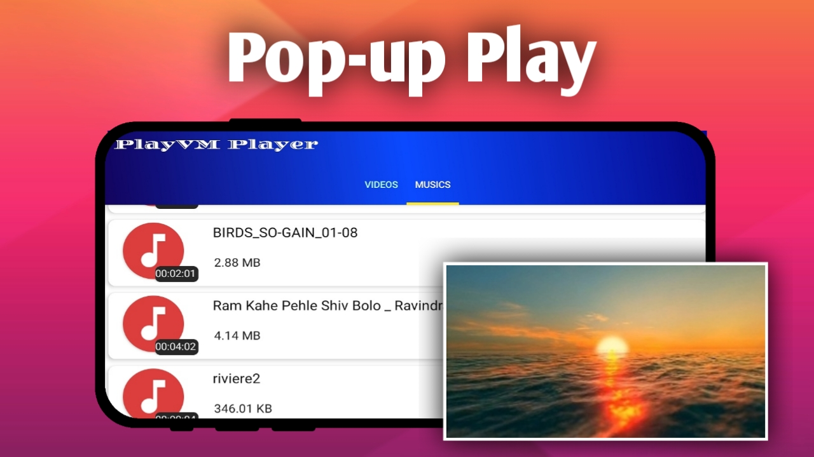
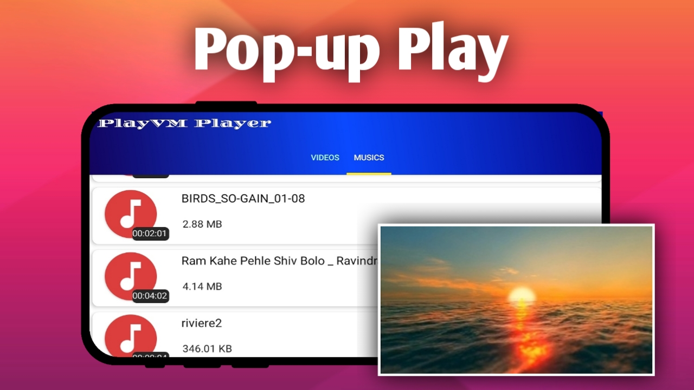

PlayVM HD Video & Music Player
Advanced HD video playback experience at your fingertips!

 

PlayVM HD Video & Music Player Pro
Experience entertainment like never before with PlayVM, the ultimate HD video and music player that supports all formats. Dive into a seamless experience where all your favorite media plays in the highest quality, from MP4 and MKV to 4K Ultra HD and Full HD. 🌟
Why Choose PlayVM?
PlayVM HD Video Player supports all major video formats, including MP4, MKV, AVI, and many more, making it an ideal choice for anyone looking to enjoy movies and music in Full HD, 4K, or 1080p resolution. Our player is professionally optimized for smooth, high-definition video performance on Android phones and tablets, ensuring you get the most immersive experience possible.
PlayVM is designed with easy-to-use controls and full subtitle support, allowing you to control and customize your viewing experience with ease. Whether you’re watching videos from your device or streaming from a memory card, PlayVM delivers stunning video quality up to 4K and 1080p 🥳🎊.
Features You will Love:
PlayVM offers powerful audio and video compatibility for Android devices, delivering an intuitive and smooth playback experience with simple controls. It supports subtitles for all video formats, and its high-definition playback will transform the way you watch your favorite content.
Download PlayVM today and elevate your entertainment experience to a new level of quality and ease. 🎬